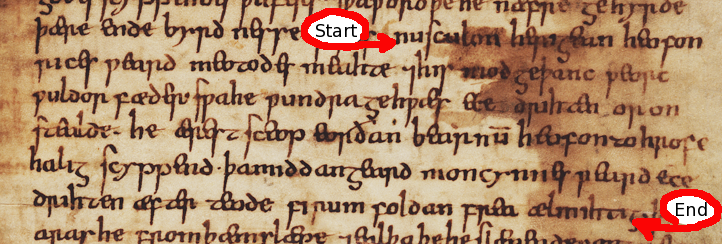

Old English Metre: A Brief Guide
Posted: Nov 21, 2006 21:11;
Last Modified: Dec 01, 2020 09:12
Keywords:
Although the Anglo-Saxons left no accounts of their metrical organisation, statistical and linguistic analysis of the poetic corpus has allowed us to come up with a good idea as to how their verse worked.
Like all early Germanic metres, Old English verse is accentual and alliterative. With very few exceptions, end rhyme does not play a structural role. And even when it is found, it never takes the place of alliteration (initial rhyme) in the earlier verse.
Stress and line division
The basic line consists of four stressed syllables and at least four lesser-stressed syllables (conventionally described as ‘unstressed’). A very strong caesura (metrical break) is found between stresses two and three. This caesura is so strong, indeed, that we tend to describe the verse in terms of half-lines: the half-line before the caesura is known as the a-verse or on-verse, the half-line after the caesura as the b-verse or off-verse.
In modern printed editions, on- and off-verses are separated graphically by a gap of three or four spaces, as in the following except from Cædmon’s Hymn (ed. O’Donnell 2005, adapted from the transcription of Tanner 10 [T1]):
Nu sculon herigean heofonrices weard,
meotodes meahte, ond his modgeþanc,
weorc wuldorfæder— swa he wundra gehwæs,
ece drihten, or onstealde!Now we must honour the guardian of heaven,
The might of the measurer, and his thoughts,
The work of the father of glory—as he, the eternal lord,
Created the beginning of each of wonders!
In Anglo-Saxon manuscripts, poetry is written from margin to margin, as in the following facsimile (reproduction) and diplomatic transcription from the same manuscript (adapted from O’Donnell 2005)1. While Anglo-Saxon scribes did not place each line of poetry on a separate line in their manuscripts, they often did mark line boundaries and caesuras with a raised point or other punctuation. There is also considerable evidence to suggest that they were aware of metre as they copied (see O’Brien O’Keeffe 1990 and O’Donnell 1996).

[ Approx. 28 characters omitted ] Nusculon herıgean heofon|
rıces ƿeard meotodes meahte ⁊hıs 〈mod〉geþanc ƿeorc|
ƿuldor fæder sƿahe ƿundra gehƿæs ee{c}e 〈a{d}〉rih〈t〉en or on|
stealde· he ærest sceop eorðan bearnū heofonto hrofe|
halıg scyppend· þamıddangeard moncynnes ƿeard ece|
drıhten æfter teode fın{r}um foldan frea ælmıhtıg· [ Approx. 3 characters omitted ]
Alliteration
The half-lines are tied together by alliteration. The rule is that one or both of stressed syllables in the on-verse must alliterate with the first stressed syllable in the off-verse. The second stressed syllable in the off-verse must not share in the alliteration. The following lines show the standard pattern of alliteration (alliterating syllables in bold):
meotodes meahte, ond hıs modgeþanc,
weorc wuldorfæder— swa he wundra gehwæs,
ece drıhten æfter teode
Consonantal Alliteration
When the alliterating syllables begin with a consonant, the sounds must be identical. Hence s alliterates only with s, b only with b, and so on. This is also true of certain consonant clusters beginning with s: stressed syllables beginning with sp only alliterate with other stressed syllables beginning with sp, stressed syllables beginning with st only alliterate with other stressed syllables beginning with st, and stressed syllables beginning with sc alliterate only with other stressed syllables beginning with sc.
Two exceptions (though they may not look like exceptions to the beginning student) are stressed syllables beginning with the characters 〈c〉 and 〈g〉. For most of the historical period, these characters were used to represent two distinct sounds each: 〈c〉 was used for /ʧ/, the sound at the beginning of Modern English church (Old English cyric), and /k/, the sound at the beginning of Modern English king (Old English cyning); 〈g〉 was used for /y/, the sound at the beginning of Modern English yard (Old English geard), and /g/, the sound at the beginning of Modern English good (Old English gōd) (see Campbell 1959/1991, Chapter 1).2 Except in the latest Old English poetry, however, poets do not distinguish between these sounds in their alliteration: stressed syllables beginning with the letter 〈c〉 alliterate with other stressed syllables beginning in 〈c〉 regardless of whether the sound being represented is /ʧ/ or /k/; likewise, stressed syllables beginning with the letter 〈g〉 alliterate with other stressed syllables beginning with 〈g〉 regardless of whether the letter stands for /y/ or /g/. Thus Old English cēap ‘bargain, purchase’ (Modern English cheap) alliterates with cyn ‘race, tribe’ (Modern English kin) in Beowulf 2482:
heardan cēape; Hæðcynne wearð
…a hard bargain; to Hæðcyn was…
More common is alliteration between /g/ and /k/ (e.g. as between begoten ‘covered’, golde (Modern English gold), and gimmas ‘jewels’ (Modern English gems) in The Dream of the Rood, 7:
begoten mid golde; gimmas stōdon
In the tenth-century or later, poets do distinguish between these sounds in their alliteration (see Amos 1980). Thus in the late poem The Battle of Maldon, 32, the 〈g〉 in gārrǣs ‘Spear-rush’ and gafole ‘tribute’ (both of which would be pronounced /g/) alliterate with each other, but not with the 〈g〉 in forgieldan, which would be pronounced /j/ (compare Modern English yield which shares the same etymology)3:
þæt gē þisne gārrǣs mid gafole forgielden
…that you repay this spear-rush with tribute…
Vocalic Alliteration
All vowels and diphthongs alliterate with each other (i.e. stressed syllables beginning in a can alliterate with stressed syllables beginning in æ, a, e, i, o, u, y, ea, eo, or ie). No distinction is made between short and long vowels or between vowels and dipthongs, and in practice better poets tended to avoid alliterating like vowels with like. It is for this reason perhaps better to understand ‘vocalic’ alliteration as reflecting the absence of consonantal alliteration than alliteration in its own right. Cædmon’s Hymn has three examples of vocalic alliteration:
ece drihten or onstealde4
he ærest sceop eorðan bearnum
ece drıhten æfter teode
Accentual Patterns
Most half-lines in the Old English corpus belong to one or another of a limited number of accentual patterns. These patterns, which are traditionally called metrical types, are distinguished by the way in which the stressed, unstressed, and semi-stressed syllables are arranged.
Sievers types
Traditionally, there are said to be five major metrical types, organised according to a system first developed by Eduard Sievers, the late nineteenth-century German linguist who first identified them. The patterns (known as Sievers types) are named by letter, in descending order of frequency:
Type A: /×/×
Type B: ×/×/
Type C: ×//×
Type D: //\×
Type E: /\×/
(In this system of scansion, / is used to mark metrically stressed syllables, × is used to mark metrically ‘unstressed’ syllables, and \ to mark metrically ‘half-stressed’ syllables.)
Each of these types has a number of subtypes. These generally involve variation in the number of unstressed syllables or the replacement of an unstressed with a half-stressed syllable. Additional variants involve the placement of unstressed syllables before the first stress of Type A, D, and perhaps E lines (a technique known as anacrusis). A separate type of very long line—known as hypermetric and found particularly in the Dream of the Rood—is built along comparable principles. A useful beginning-level discussion of the various subtypes can be found in Pope and Fulk 2001, 129-158).
The following Modern English ‘poem’, initially popularised by Bruce Mitchell (see Mitchell and Robinson 2001, p. 165) but now updated by Rachel Hanks, can be used to help you remember the different types:
| Type A (/×/×) | Anna angry |
| Type B (×/×/) | gave Bob the bold |
| Type C (×//×) | A Clear Kicking, |
| Type D (//\×) | Dire, Death-bringing, |
| Type E (/\×/) | Earth-rending End |
Note that this poem is a mnemonic! It gets the stress patterns correct enough for you to remember broadly what they are.
Syllable Length
Whether or not a syllable is metrically stressed depends on its length, word-stress and clause-stress. Syllables can be long in three different ways:
- long by nature
- long by position
- ‘long’ by resolution
Long by nature
Syllables are long by nature when they contain a long vowel (marked with a macron in many textbooks and dictionaries). Stressed syllables that are long by nature (marked in bold) include:
- wīc, ‘habitation, dwelling’
- wēpan, ‘to weep’
- hālig, ‘holy’
Long by position
Syllables are long by position when they are followed by two or more consonants in the middle of a word or one or more consonants at the word boundary. Examples, marked in bold, include:
- giestas, ‘strangers’ (plural of giest)
- eoh, ‘horse’
- edg, ‘edge’
Resolution
Resolution is a purely metrical phenomenon where by short stressed syllables are counted as long if they are followed by an unaccented syllable that is not necessary for the metre; resolution is marked using a tie symbol: to connect the stressed and unstressed syllables. The following examples (bold) are all long because they can be “resolved” using the following (unstressed) syllable (italics):
- metudaes maecti (stress pattern: /͜××/×)
- ōr āstelidæ (stress pattern: /×/͜××)
- heben til hrōfe (stress pattern: /͜××/×).
Resolution depends on the metrical context: some sub-types allow the present of short stressed or unstressed syllables. The following example, for example, does not show resolution:
- on campstede (stress pattern: ×/\̮×)
Word-stress
Primary stress
In Germanic (the ancestor of Old English and other languages like German and Dutch), primary stress fell on the first syllable of all words. In Old English, this rule is largely preserved, meaning that primary stress falls on the first syllable of all simple words and most compounds5:
unnytt, ‘useless’; giefu, ‘gift’; standan, ‘to stand’
The main exceptions (stressed syllables in bold) to this rule include
- The prefix ge-, which is never stressed, on any part of speech, e.g. gehwǣs, ‘of each’; gesittan, ‘to sit’; gesceaft, ‘creation’.
- Most ‘prefixes’ on verbs and adverbs, e.g. wiþsacan, ‘to refuse’; ætgædere, ‘together’.
- _for_- and _be_- can be either stressed or unstressed on nouns: _forbod, ‘prohibition’ vs. forwyrd, ‘ruin’ (see Cambell 1959/1991, § 74).
Secondary stress
Secondary stress (italics) falls
- on the second element of compounds(italics): wælsleaht, ‘slaughter’
- on ‘heavy’ derivational suffixes after a long or resolved syllable: scieppend, ‘creator’; beorhtost, ‘brightest’ (see Campbell 1959/1991, §89).
- on final syllables which become long on inflection: Hen[_ges]tes_, ‘Hengest’s’ (genitive singular); ōþerne, ‘other’ (accusative singular masculine).
Clause-Stress
Although every word in Old English has at least one stressed syllable, not all stressed syllables are equally prominent within the clause or sentence. As in Modern English, stressed syllables in nouns and adjectives tend to be more prominent than stressed syllables in pronouns or conjunctions:
Would an apple be as sweet?
On the other hand, words that usually take low sentence stress receive much heavier stress when they are out of position (compare the stress on I in the following):
I went up the mountain
Up the mountain went I
Stress and Word classes
In general terms, it is possible to classify Old English words in to three main metrical classes:
- Always Stressed: nouns, adjectives, infinitives, participles.
- Sometimes Stressed: finite verbs, adverbs
- Rarely Stressed: conjunctions, prepositions, pronouns, relatives
This metrical distinction reflects an underlying linguistic difference: words that are always stressed in Old English all belong to the open word-classes. Words that are rarely stressed all belong to the closed word-classes. The middle category, sometimes stressed involve categories that include words belonging to open and closed word classes.
Scansion of Cædmon’s Hymn
The following is a scansion of Cædmon’s Hymn using a modified form of the Sievers system. Letter names followed by a number (e.g. A-3 refer to common subtypes of the main five verse patterns. See Pope and Fulk 2001 for a detailed listing.
| (A-3: ×××/×) | Nū scylun hergan hefaenricaes uard | (E: /‿×\×/) |
| (A-1: /‿××/×) | metudaes maecti end his mōdgidanc | (B: ××/×/) |
| (D-2: //(×)\×) | uerc uuldụrfadur suē hē uundra gihuaes | (B-2: ××/××/) |
| (A-1: /×/×) | ēci dryctin ōr āstelidæ | (A-1: /×/‿××) |
| (B-1: ×/×/) | Hē āerist scōp eordu barnum | (A-1: /×/×) |
| (A-1: /‿××/×) | heben til hrōfe hāleg sceppend | (A-1: /×/×) |
| (B-1: ×/×\) | thā middungeard moncynnæs uard | (E: /\×/) |
| (A-1: /×/×) | ēci dryctin æfter tīadæ | (A-1: /×/×) |
| (A-1: /×/×) | fīrum foldu frēa allmectig | (D-1: //\×) |
Other scansion systems
The Sievers system is generally considered to be descriptively adequate but theoretically deficient by contemporary metricists. As a result, considerable effort has been devoted over the last half-century or so to developing alternative accounts of the metre. The most widely accepted alternative system currently is the stress foot system, developed and described most thoroughly by Russom. Its details are beyond the scope of this short introduction.
Further reading
Excellent introductions to Old English scansion can be found in Mitchell and Robinson 2001, Appendix C, and Pope and Fulk 2001, 129-158. The original work by Sievers can be found in Sievers 1885-1887 and 1893. Most Anglo-Saxonists use a version of Sievers system developed by Bliss (1962/1993). The Stress-Foot system is developed in Russom 1987 and 1998; see also Bredehoft 2005 for some useful revisions.
Works Cited
- Amos, Ashley Crandell. 1980. Linguistic Means of Dating Old English Poetrical Texts. Cambridge MA: Medieval Academy.
- Bliss, A.J. 1962/1993. Introduction to Old English Metre. Oxford: Blackwell. Reprinted in Old English Newsletter Subsidia 20. Binghampton: Center for Medieval and Early Renaissance Studies.
- Bredehoft, Thomas A. 2005. Early English Metre. Toronto: University of Toronto Press.
- Campbell, A. 1959/1991. Old English Grammar. Oxford: Clarendon.
- O’Brien O’Keeffe, Catherine. Visible Song. Transitional Literacy in Old English Verse. Cambridge Studies in Anglo-Saxon England 4. Cambridge: Cambridge University Press.
- O’Donnell, Daniel Paul. 1996. “Manuscript Variation in Multiple-Recension Old English Poetic Texts: The Technical Problem and Poetical Art.” Unpubl. PhD Dissertiation. New Haven: Yale University. Available online.
- O’Donnell, Daniel Paul. 2005. Cædmon’s Hymn: A Multimedia Study, Edition, and Archive. Cambridge: D.S. Brewer.
- Pope, John C. and R.D. Fulk. Eight Old English Poems. New York: Norton, 2001.
- Russom, Geoffrey. 1987. Old English Metre and Linguistic Theory. Cambridge: Cambridge University Press.
- Russom, Geoffrey. 1998. ‘Beowulf’ and Old Germanic Meter. Cambridge: Cambridge University Press.
- Sievers, Eduard. ‘Zur Rhythmik der germanischen Alliterationsverses.’ Beiträge zur Geschichte der deutschen Sprache und Literature. 10:209-314, 451-545; 12:454-482.
- Sievers, Eduard. 1893. Altgermanische Metrik. Halle: Niemeyer.
Notes
1 For the conventions used in this transcription, see O’Donnell 2005, § ii.6.
2 Many introductory textbooks distinguish between these letters, using 〈ċ〉 to spell /ʧ/, 〈ġ〉 to spell /y/, and 〈c〉 and 〈g〉 to represent the sounds /k/ and /g/ respectively. These letters are not found in the original manuscripts, however; they are a modern development.
3 If forgielden shared in the alliteration, the line would be unmetrical, since, as we’ve seen above, the second stressed syllable in the off-verse must not share in the alliteration. While the metre of the Battle of Maldon is unusual in many respects, the poet does seem to observe this constraint.
4 onstealde does not share in the alliteration because the accent falls on steal not on.
5 A thorough and accessible discussion of Old English word stress (from which this account largely is derived) can be found in Campbell 1959/1991, Chapter II.

Commenting is closed for this article.